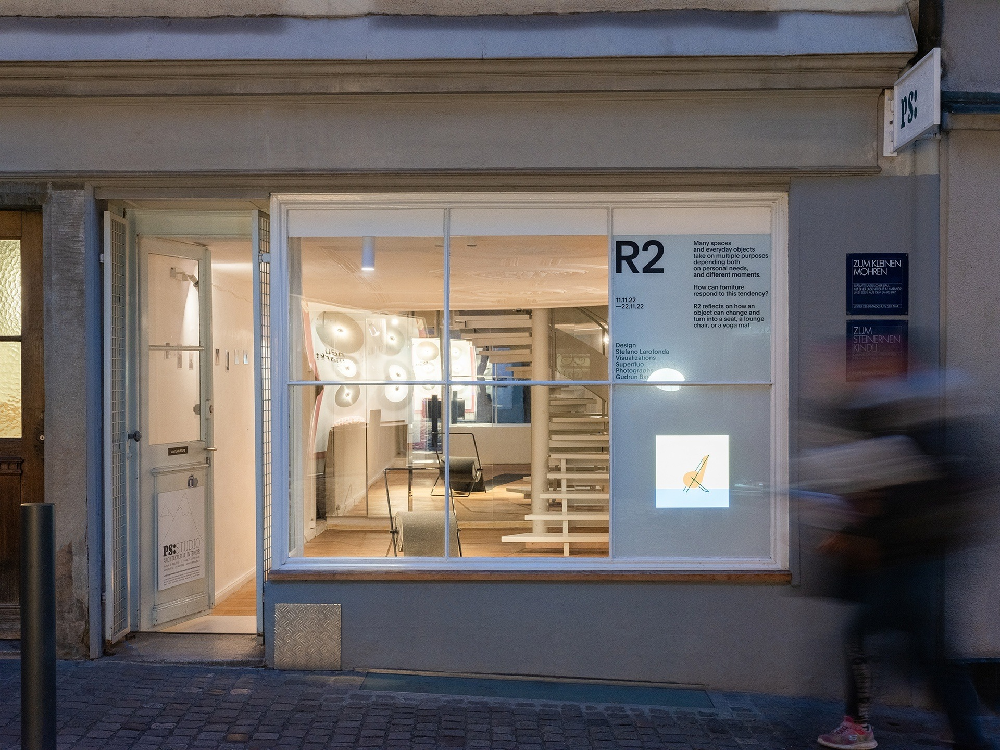
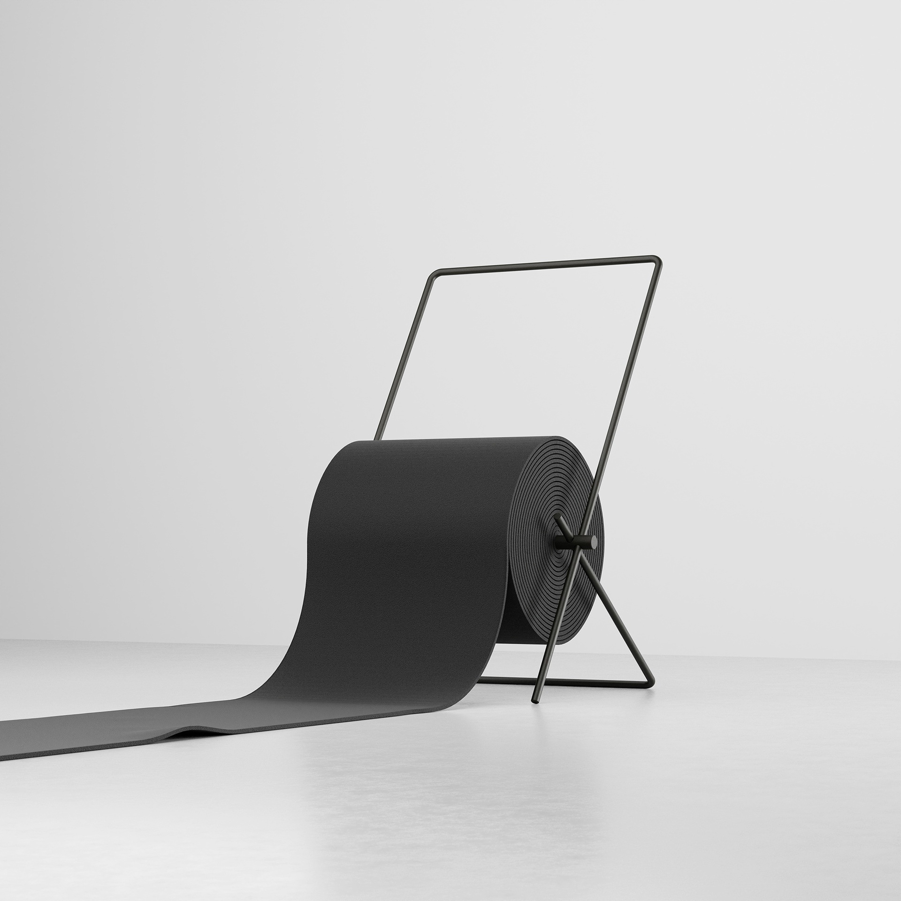
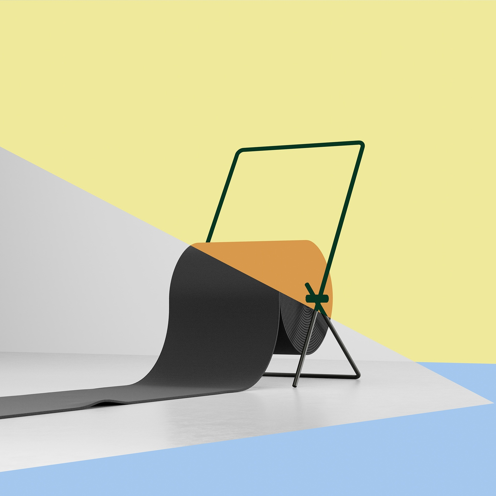
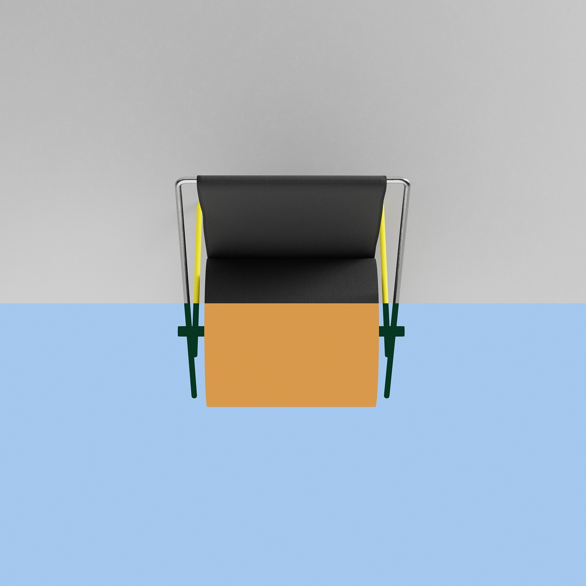
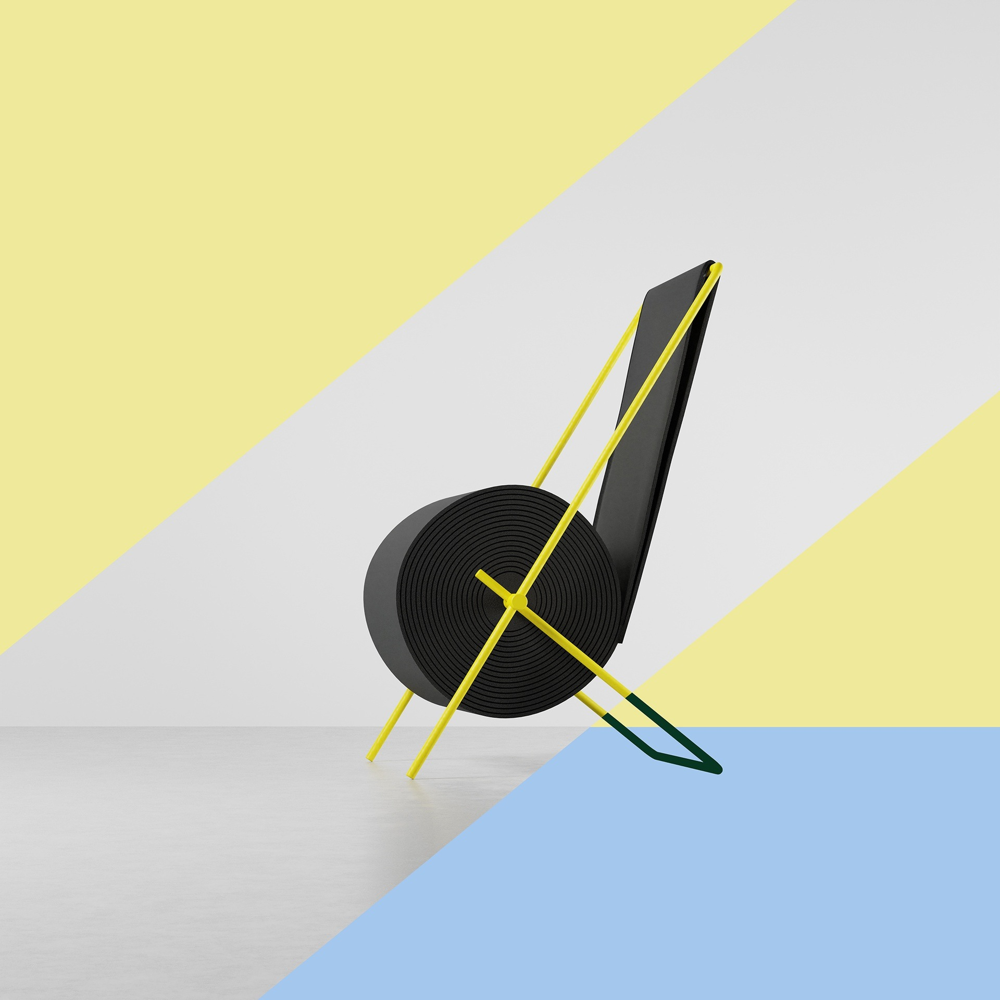

transitions
a video research on flexibility in furniture design
displayed at the exhibition r2 curated by stefano larotonda
ps: studio gallery, neumarktstrasse 20, zurich
11.11.22 – 22.11.22

R2 by Stefano Larotonda is a reflection on transformation and adaptability. In a time when everything needs to be versatile, it explores how an object can shift and adapt to different scenarios.

transitions was conceived as a companion piece to the exhibition—a parallel reflection. What started as a simple representational tool evolved into an exploration of adaptability, extending the concept to the medium itself.

As the line between photos of real objects and visualizations of their virtual counterparts continues to blur, transitions hints at possibilities beyond the physical world. It plays with states of transformation, leaving space for what might exist between fixed forms.

Using rendering passes as a visual device, it disrupts the illusion of the screen, suggesting shifts and configurations that feel both familiar and unreal.

Play below with a colorful transition.